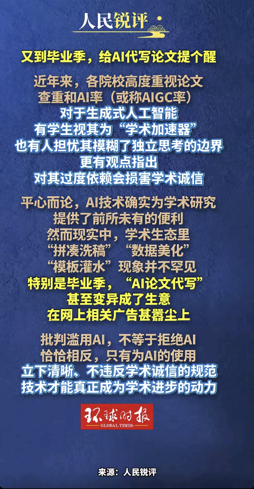

AI学术公平，是指所有研究者不论身份、地域、资源、语言差异，都能平等使用AI学术工具、享有同等学术机会，不受算法歧视与资源壁垒限制。
当前人工智能已深度融入论文写作、文献检索、数据分析、期刊审稿等学术环节，大幅提升科研效率。国内外高校、核心期刊与学术顶会，都已开始重视AI应用带来的学术公平隐患。
随着AI工具普及，不同群体间的使用差距、算法偏见、伦理规范缺失等问题逐渐凸显，成为当下学术领域需要正视的重要课题。

在AI技术介入学术评审与文献推荐的过程中，算法偏见已成为影响学术公平的首要隐患。当前主流学术平台的智能审稿系统、文献推送模型大多依托现有海量学术数据训练而成，天然偏向英文文献、双一流高校学者以及高引用成果，对小众学科、冷门研究方向存在明显忽视。非英语母语研究者、地方高校科研人员的成果容易被算法低估，即便学术价值达标，也难以获得公正评审机会与曝光渠道。这种隐性的算法倾斜，固化了学术圈层壁垒，让普通研究者在起点上就处于弱势地位，破坏了学术评价应有的客观中立原则，也阻碍了多元学术思想的交流与发展。
优质AI学术工具普遍采用付费订阅模式，高端文献分析、智能写作辅助、专业数据建模等工具费用偏高，给普通大学生、基层科研人员和欠发达地区研究者带来使用门槛。经济条件较好、资源充足的重点高校群体可以便捷享用全套AI工具辅助科研写作，而偏远地区院校和普通学生只能使用功能简陋的免费版本，形成明显的资源落差。长期下来，这种工具使用上的不平等会拉大科研能力差距，优质资源向优势群体集中，弱势群体难以借助AI实现学术提升，进一步加剧教育与科研资源分配不均，违背学术公平人人平等的基本原则。
生成式AI的普及模糊了学术原创与工具辅助的边界，部分学生和研究者过度依赖AI代写论文、生成观点、伪造分析内容，甚至直接照搬AI产出当作原创成果。这种行为弱化了独立思考与学术训练的价值，违背论文写作培养逻辑思维与科研素养的初衷。同时AI生成内容存在逻辑漏洞、事实错误却难以自查，加上目前高校AI检测标准不统一、监管难度大，催生了AI降重、伪装原创等灰色产业链。坚守原创、合理使用AI的研究者反而陷入被动，形成劣币驱逐良币的局面，严重冲击学术诚信底线，破坏整体学术风气与公平竞争环境。
大学生论文"AI味儿"渐浓 学术不端引担忧
技术层面：研发去偏算法，优化AI评审机制；开发开源免费轻量化学术AI工具，强化多语言适配，降低使用门槛。
制度层面：制定AI学术使用规范，明确AI内容标注要求；完善人工+AI双重评审机制，规避算法偏见带来的不公。
教育层面：普及AI学术素养培训，引导学生与研究者合理、合规使用AI，树立正确学术观念。
资源层面：高校和机构开放免费AI工具权限，搭建共享平台，缩小区域与群体间的数字鸿沟。
未来AI应成为普惠学术工具，通过技术、制度、教育、资源多方协同，构建公平、开放、规范的AI学术生态。